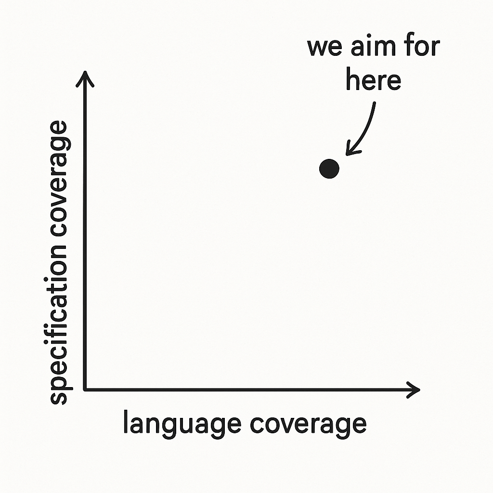

<!doctype html>
<html>
	<head>
		<meta charset="utf-8">
		<meta name="viewport" content="width=device-width, initial-scale=1.0, maximum-scale=1.0, user-scalable=no">

		<title>Formal Land - coq-of-rust</title>

		<link rel="stylesheet" href="dist/reset.css">
		<link rel="stylesheet" href="dist/theme/white.css">
		<link rel="stylesheet" href="dist/reveal.css">

		<link rel="shortcut icon" type="image/jpg" href="https://formal.land/img/icons/land.png" />

		<!-- Theme used for syntax highlighted code -->
		<link rel="stylesheet" href="plugin/highlight/monokai.css">
	</head>
	<body>
		<div class="reveal">
			<div class="slides">
				<section data-markdown>
					<script type="text/template">
						# `coq-of-rust`
						

						> Formal verification for Rust in Rocq

						<small>Paris 2025-06-25 🇫🇷</small>

						<!-- <small>[https://github.com/formal-land/coq-of-rust](https://github.com/formal-land/coq-of-rust)</small> -->
					</script>
				</section>
				<section data-markdown>
					<script type="text/template">
						## Formal Land

						* Formal verification company
						* Web3, cryptography

						[https://formal.land/](https://formal.land/)

						<small>Paris, France</small>
					</script>
				</section>
				<section data-markdown>
					<script type="text/template">
						## ✅ Formal Verification

						The idea of making sure a program is 💯% correct
					</script>
				</section>
				<section data-markdown>
					<script type="text/template">
						## Examples

						- Backward compatibility between versions
						- Absence of runtime errors
						- Business rules
					</script>
				</section>
				<section data-markdown>
					<script type="text/template">
						## Technique

						- A mathematical analysis of the code
						- Verified in a proof language
					</script>
				</section>
				<section data-markdown>
					<script type="text/template">
						## coq-of-rust

						* Formal verification tool for Rust&nbsp;🦀
						* By translation to the proof language [Rocq](https://rocq-prover.org/)
						* Open source

						[github.com/formal-land/coq-of-rust](https://github.com/formal-land/coq-of-rust)
					</script>
				</section>
				<section data-markdown>
					<script type="text/template">
						
					</script>
				</section>
				<section data-markdown>
					<script type="text/template">
						## We provide

						* Application
						* Training
					</script>
				</section>
				<section data-markdown>
					<script type="text/template">
						## Application

						
					</script>
				</section>
				<section data-markdown>
					<script type="text/template">
						## Application

						Specify Revm interpreter (WIP)

						* Ethereum's virtual machine
						* 5,000 lines of Rust (core)
					</script>
				</section>
				<section data-markdown>
					<script type="text/template">
						## Revm

						Responsible of executing smart contracts on Ethereum

						$300B in valuation
					</script>
				</section>
				<section data-markdown>
					<script type="text/template">
						## Code extract

						ADD instruction

						```rust
pub fn add<
	WIRE: InterpreterTypes,
	H: ?Sized
>(context: InstructionContext<'_, H, WIRE>) {
	gas!(context.interpreter, gas::VERYLOW);
	popn_top!([op1], op2, context.interpreter);
	*op2 = op1.wrapping_add(*op2);
}
						```
					</script>
				</section>
				<section data-markdown>
					<script type="text/template">
						## 🎯 Goal

						Show it is equivalent to a purely functional version
					</script>
				</section>
				<section data-markdown>
					<script type="text/template">
						## 🎯 End goal

						Show all EVM implementations are equivalent
					</script>
				</section>
				<section data-markdown>
					<script type="text/template">
						## Other applications

						Verify the 👨‍💻 zkVM implementations
					</script>
				</section>
				<section data-markdown>
					<script type="text/template">
						## Strategy

						
					</script>
				</section>
				<section data-markdown>
					<script type="text/template">
						## Steps

						1. THIR
						2. Raw Rocq
						3. Linking
						4. Functional Rocq (WIP)
					</script>
				</section>
				<section data-markdown>
					<script type="text/template">
						## 1. THIR

						Obtained by `rustc`
					</script>
				</section>
				<section data-markdown>
					<script type="text/template">
						## 2. Raw Rocq

						Generated by `coq-of-rust`
					</script>
				</section>
				<section data-markdown>
					<script type="text/template">
						## Example

						```rust
pub fn unwrap_or(self, default: T) -> T {
    match self {
        Some(x) => x,
        None => default,
    }
}
						```
					</script>
				</section>
				<section style="font-size: 19px;" data-markdown>
					<script type="text/template">
						## Raw Rocq

						```coq
Definition unwrap_or (T : Ty.t) (ε : list Value.t) (τ : list Ty.t) (α : list Value.t) : M :=
  let Self : Ty.t := Self T in
  match ε, τ, α with
  | [], [], [ self; default ] =>
    ltac:(M.monadic
      (let self := M.alloc (| self |) in
      let default := M.alloc (| default |) in
      M.read (|
        M.match_operator (|
          T,
          self,
          [
            fun γ =>
              ltac:(M.monadic
                (let γ0_0 :=
                  M.SubPointer.get_struct_tuple_field (|
                    γ,
                    "core::option::Option::Some",
                    0
                  |) in
                let x := M.copy (| γ0_0 |) in
                x));
            fun γ =>
              ltac:(M.monadic
                (let _ := M.is_struct_tuple (| γ, "core::option::Option::None" |) in
                default))
          ]
        |)
      |)))
  | _, _, _ => M.impossible "wrong number of arguments"
  end.
						```
					</script>
				</section>
				<section data-markdown>
					<script type="text/template">
						## Raw Rocq

						* Can translate the `core` library
						* Most of the programs we tried
					</script>
				</section>
				<section data-markdown>
					<script type="text/template">
						## 🥗 Ingredients

						* Untyped
						* Names as strings
						* Reification
						* Almost no generated names
					</script>
				</section>
				<section data-markdown>
					<script type="text/template">
						## For now

						* Mostly data 📜
						* We need a semantics!
					</script>
				</section>
				<section style="font-size: 35px;" data-markdown>
					<script type="text/template">
						## Values

						```coq
Inductive t : Set :=
| Bool : bool -> t
| Integer (kind : IntegerKind.t) (z : Z) : t
| UnicodeChar : Z -> t
| String : string -> t
| Tuple : list t -> t
| Array : list t -> t
| StructRecord : string -> list t -> list Ty.t ->list (string * t) -> t
| StructTuple : string -> list t -> list Ty.t -> list t -> t
| Pointer : Pointer.t t -> t
| Closure : {'(Value, M) : (Set * Set) @ list Value -> M} -> t
| Error (message : string)
| DeclaredButUndefined.
						```
					</script>
				</section>
				<section style="font-size: 35px;" data-markdown>
					<script type="text/template">
						## Pointers

						```coq
Module Index.
  Inductive t : Set :=
  | Tuple (index : Z)
  | Array (index : Z)
  | StructRecord (constructor field : string)
  | StructTuple (constructor : string) (index : Z).
End Index.

Module Path.
  Definition t : Set := list Index.t.
End Path.

Module Core.
  Inductive t (Value : Set) : Set :=
  | Make {Address : Set} (address : Address) (path : Path.t).
  Arguments Make {_ _}.
End Core.
						```
					</script>
				</section>
				<section style="font-size: 35px;" data-markdown>
					<script type="text/template">
						## Monad

						```coq
Module LowM.
  Inductive t (A : Set) : Set :=
  | Pure (value : A)
  | CallPrimitive (primitive : Primitive.t) (k : Value.t -> t A)
  | CallClosure
    (ty : Ty.t) (closure : Value.t) (args : list Value.t) (k : A -> t A)
  | CallLogicalOp
    (op : LogicalOp.t) (lhs : Value.t) (rhs : t A) (k : A -> t A)
  | LetAlloc (ty : Ty.t) (e : t A) (k : A -> t A)
  | Loop (ty : Ty.t) (body : t A) (k : A -> t A)
  | MatchTuple (tuple : Value.t) (k : list Value.t -> t A)
  | Impossible (message : string).
End LowM.
						```
					</script>
				</section>
				<section style="font-size: 35px;" data-markdown>
					<script type="text/template">
						## Primitives

						```coq
Module Primitive.
  Inductive t : Set :=
  | StateAlloc
    (value : Value.t)
  | StateRead
    (pointer : Value.t)
  | StateWrite
    (pointer : Value.t)
    (value : Value.t)
  | GetSubPointer
    (pointer : Value.t)
    (index : Pointer.Index.t)
  | GetFunction
    (path : string)
    (generic_consts : list Value.t)
    (generic_tys : list Ty.t)
  | GetAssociatedFunction
    (ty : Ty.t)
    (name : string)
    (generic_consts : list Value.t)
    (generic_tys : list Ty.t)
  | GetTraitMethod
    (trait : string)
    (self_ty : Ty.t)
    (trait_consts : list Value.t)
    (trait_tys : list Ty.t)
    (method : string)
    (generic_consts : list Value.t)
    (generic_tys : list Ty.t).
End Primitive.
						```
					</script>
				</section>
				<section data-markdown>
					<script type="text/template">
						## Control flow

						Error monad on top for:

						* panics
						* return
						* break
						* continue
					</script>
				</section>
				<section data-markdown>
					<script type="text/template">
						## 3. 🔗 Linking

						Target:

						A smaller monad with just memory handling
					</script>
				</section>
				<section data-markdown>
					<script type="text/template">
						## We handle

						* Typing
						* Name resolution
						* Trait resolution
					</script>
				</section>
				<section style="font-size: 35px;" data-markdown>
					<script type="text/template">
						## Linking monad

						```coq
Module Primitive.
  Inductive t : Set -> Set :=
  | StateAlloc {A : Set} `{Link A} (value : A) : t (Ref.Core.t A)
  | StateRead {A : Set} `{Link A} (ref_core : Ref.Core.t A) : t A
  | StateWrite {A : Set} `{Link A} (ref_core : Ref.Core.t A) (value : A) :
    t unit
  | GetSubPointer {A : Set} `{Link A} {index : Pointer.Index.t}
    (ref_core : Ref.Core.t A) (runner : SubPointer.Runner.t A index) :
    let _ := runner.(SubPointer.Runner.H_Sub_A) in
    t (Ref.Core.t runner.(SubPointer.Runner.Sub_A)).
End Primitive.
						```
					</script>
				</section>
				<section data-markdown>
					<script type="text/template">
						## 🗺️ To make the links

						1. Prove there exists a name/trait resolution + typing
						2. Generale the linked version
					</script>
				</section>
				<section data-markdown>
					<script type="text/template">
						## Idiomatic data types

						```coq
Class Link (A : Set) : Set := {
  Φ : Ty.t;
  φ : A -> Value.t;
}.
						```
					</script>
				</section>
				<section data-markdown>
					<script type="text/template">
						## Predicate

						`{{ e 🔽 R , Output }}`
					</script>
				</section>
				<section data-markdown>
					<script type="text/template">
						## Predicate

						```coq
| CallPrimitiveStateRead {A : Set} `{Link A}
    (ref_core : Ref.Core.t A)
    (k : Value.t -> M) :
  let ref : Ref.t Pointer.Kind.Raw A :=
    {| Ref.core := ref_core |} in
  (forall (value : A),
    {{ k (φ value) 🔽 R, Output }}
  ) ->
  {{
    LowM.CallPrimitive (Primitive.StateRead (φ ref)) k 🔽
    R, Output
  }}
						```
					</script>
				</section>
				<section data-markdown>
					<script type="text/template">
						## Predicate

						```coq
| CallPrimitiveGetFunction
    (name : string) consts tys
    (function : PolymorphicFunction.t)
    (k : Value.t -> M) :
  let closure :=
    Value.Closure (existS (_, _) (function consts tys)) in
  M.IsFunction.C name function ->
  {{ k closure 🔽 R, Output }} ->
  {{
    LowM.CallPrimitive
      (Primitive.GetFunction name consts tys) k 🔽
    R, Output
  }}
						```
					</script>
				</section>
				<section data-markdown>
					<script type="text/template">
						## Predicate

						We write it in interactive mode.

						With automation.
					</script>
				</section>
				<section data-markdown>
					<script type="text/template">
						## Predicate

						```coq
Instance run_unwrap_or {T : Set} `{Link T}
    (self : option T) (default : T) :
  Run.Trait
    (unwrap_or (Φ T)) [] [] [ φ self; φ default ]
    T.
Proof.
  constructor.
  run_symbolic.
Defined.
						```
					</script>
				</section>
				<section data-markdown>
					<script type="text/template">
						## Generate

						An eval function of type:

						```coq
forall {R Output : Set} `{Link R} `{Link Output} {e : M}
  (run : {{ e 🔽 R, Output }}),
LowM.t R Output.
						```

						We apply it!
					</script>
				</section>
				<section data-markdown>
					<script type="text/template">
						## Coverage

						95% of the instructions of Revm
					</script>
				</section>
				<section data-markdown>
					<script type="text/template">
						## Complex cases

						Trait hierarchy 🛆 with multiple inheritance/associated types.
					</script>
				</section>
				<section data-markdown>
					<script type="text/template">
						## Complex cases

						```rust
pub trait InterpreterTypes {
	type Stack: StackTrait;
	type Memory: MemoryTrait;
	type Bytecode: Jumps
		+ Immediates
		+ LegacyBytecode
		+ EofData
		+ EofContainer
		+ EofCodeInfo;
	type ReturnData: ReturnData;
	type Input: InputsTrait;
	type SubRoutineStack: SubRoutineStack;
	type Control: LoopControl;
	type RuntimeFlag: RuntimeFlag;
	type Extend;
}
						```
					</script>
				</section>
				<section style="font-size: 30px;" data-markdown>
					<script type="text/template">
						## Complex cases

						```coq
Class Run
    (Self : Set) `{Link Self}
    (types : Types.t) `{Types.AreLinks types} :
    Set := {
  Stack_IsAssociated :
    IsTraitAssociatedType
      "revm_interpreter::interpreter_types::InterpreterTypes" [] [] (Φ Self)
      "Stack" (Φ types.(Types.Stack));
  run_StackTrait_for_Stack : StackTrait.Run types.(Types.Stack);
  Memory_IsAssociated :
    IsTraitAssociatedType
      "revm_interpreter::interpreter_types::InterpreterTypes" [] [] (Φ Self)
      "Memory" (Φ types.(Types.Memory));
  run_MemoryTrait_for_Memory :
    MemoryTrait.Run
      types.(Types.Memory)
      types.(Types.Memory_Synthetic)
      types.(Types.Memory_Synthetic1);
  Bytecode_IsAssociated :
    IsTraitAssociatedType
      "revm_interpreter::interpreter_types::InterpreterTypes" [] [] (Φ Self)
      "Bytecode" (Φ types.(Types.Bytecode));
  run_Jumps_for_Bytecode : Jumps.Run types.(Types.Bytecode);
  run_Immediates_for_Bytecode : Immediates.Run types.(Types.Bytecode);
  run_LegacyBytecode_for_Bytecode : LegacyBytecode.Run types.(Types.Bytecode);
  run_EofData_for_Bytecode : EofData.Run types.(Types.Bytecode);
  run_EofContainer_for_Bytecode : EofContainer.Run types.(Types.Bytecode);
  run_EofCodeInfo_for_Bytecode : EofCodeInfo.Run types.(Types.Bytecode);
  ReturnData_IsAssociated :
    IsTraitAssociatedType
      "revm_interpreter::interpreter_types::InterpreterTypes" [] [] (Φ Self)
      "ReturnData" (Φ types.(Types.ReturnData));
  run_ReturnData_for_ReturnData : ReturnData.Run types.(Types.ReturnData);
  Input_IsAssociated :
    IsTraitAssociatedType
      "revm_interpreter::interpreter_types::InterpreterTypes" [] [] (Φ Self)
      "Input" (Φ types.(Types.Input));
  run_InputsTrait_for_Input : InputsTrait.Run types.(Types.Input);
  SubRoutineStack_IsAssociated :
    IsTraitAssociatedType
      "revm_interpreter::interpreter_types::InterpreterTypes" [] [] (Φ Self)
      "SubRoutineStack" (Φ types.(Types.SubRoutineStack));
  run_SubRoutineStack_for_SubRoutineStack : SubRoutineStack.Run types.(Types.SubRoutineStack);
  Control_IsAssociated :
    IsTraitAssociatedType
      "revm_interpreter::interpreter_types::InterpreterTypes" [] [] (Φ Self)
      "Control" (Φ types.(Types.Control));
  run_LoopControl_for_Control : LoopControl.Run types.(Types.Control);
  RuntimeFlag_IsAssociated :
    IsTraitAssociatedType
      "revm_interpreter::interpreter_types::InterpreterTypes" [] [] (Φ Self)
      "RuntimeFlag" (Φ types.(Types.RuntimeFlag));
  run_RuntimeFlag_for_RuntimeFlag : RuntimeFlag.Run types.(Types.RuntimeFlag);
}.
						```
					</script>
				</section>
				<section data-markdown>
					<script type="text/template">
						## 4. Functional Rocq (WIP)

						We need to automated more memory manipulations

						🐘
					</script>
				</section>
				<section data-markdown>
					<script type="text/template">
						## Version with aliases

						Similar strategy:

						* Going to a simpler monad
						* Mix evaluation/proof
					</script>
				</section>
				<section data-markdown>
					<script type="text/template">
						## Generation

						* Evaluation function
						* Makes the allocation on a stack
						* Requires "cast" as a primitive
					</script>
				</section>
				<section data-markdown>
					<script type="text/template">
						## Generation

						Eval function:

						```coq
forall {R Output : Set} {Stack : Stack.t}
  (e : LowM.t R Output)
  (stack : Stack.to_Set Stack) :
t (Output.t R Output * Stack.to_Set Stack).
						```
					</script>
				</section>
				<section data-markdown>
					<script type="text/template">
						## Proof

						Show we can eliminate the casts
					</script>
				</section>
				<section data-markdown>
					<script type="text/template">
						## Predicate

						`{{ e 🌲 value }}`
					</script>
				</section>
				<section data-markdown>
					<script type="text/template">
						## Predicate

						We need more automation to scale
					</script>
				</section>
				<section data-markdown>
					<script type="text/template">
						## Functional Rocq

						```coq
Definition unwrap_or {A : Set}
    (value : option A) (default : A) :
    A :=
  match value with
  | Some value => value
  | None => default
  end.
						```
					</script>
				</section>
				<section data-markdown>
					<script type="text/template">
						## Equivalence proof

						```coq
Lemma unwrap_or_eq {A : Set} `{Link A}
    (value : option A) (default : A) :
  {{
    StackM.eval_f (Stack := [])
      (run_unwrap_or value default) tt 🌲
    (Output.Success (unwrap_or value default), tt)
  }}.
Proof.
  destruct value; repeat (
    cbn ||
    get_can_access ||
    apply Run.Pure
  ).
Qed.
						```
					</script>
				</section>
				<section style="font-size: 27px;" data-markdown>
					<script type="text/template">
						## Another example

						```rust
struct Numbers {
  a: u64,
  b: u64,
  c: u64,
}

fn get_a_ref(numbers: &Numbers) -> &u64 {
  &numbers.a
}

fn get_b_mut(numbers: &mut Numbers) -> &mut u64 {
  &mut numbers.b
}

fn duplicate(a: &u64, b: &mut u64, c: &mut u64) {
  *b = *a;
  *c = *a;
}

fn apply_duplicate(numbers: &mut Numbers) {
  duplicate(get_a_ref(&numbers), get_b_mut(&mut numbers), &mut numbers.c);
}
						```
					</script>
				</section>
				<section data-markdown>
					<script type="text/template">
						## Another example

						Shown equal to:

						```coq
Definition apply_duplicate (numbers : Numbers.t) :=
  {|
    Numbers.a := numbers.(Numbers.a);
    Numbers.b := numbers.(Numbers.a);
    Numbers.c := numbers.(Numbers.a);
  |}.
						```
					</script>
				</section>
				<section data-markdown>
					<script type="text/template">
						## Design choices

						Leverage type-theory

						(with Rocq)
					</script>
				</section>
				<section data-markdown>
					<script type="text/template">
						## Design choices

						AI-friendly

						🤖

						=> Verbose but simple
					</script>
				</section>
				<section data-markdown>
					<script type="text/template">
						## Size

						* 7,000 lines of Rust
						* A few thousand lines of Rocq
					</script>
				</section>
				<section data-markdown>
					<script type="text/template">
						## Remark

						A lot of the techniques can apply to other programming languages (Go?)
					</script>
				</section>
				<section data-markdown>
					<script type="text/template">
						# Thanks!
						🌲&nbsp;Formal&nbsp;Land
						> <small>Formal verification for everyday-life applications</small>

						[https://formal.land/](https://formal.land/)
					</script>
				</section>
			</div>
		</div>

		<script src="dist/reveal.js"></script>
		<script src="plugin/notes/notes.js"></script>
		<script src="plugin/markdown/markdown.js"></script>
		<script src="plugin/highlight/highlight.js"></script>
		<script>
			// More info about initialization & config:
			// - https://revealjs.com/initialization/
			// - https://revealjs.com/config/
			Reveal.initialize({
				hash: true,

				// Learn about plugins: https://revealjs.com/plugins/
				plugins: [ RevealMarkdown, RevealHighlight, RevealNotes ]
			});
		</script>
	</body>
</html>
